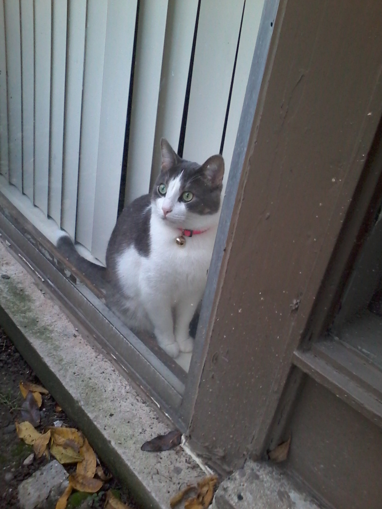

Fotos von Katzen
Warum Katzen?, fragen Sie sich wohl. Naja, Ich brauche eine Fotogalerie auf meiner Seite, und es gibt nichts, was ich lieber hier haben würde als Fotos von Katzen. Es gibt kein Wesen eleganter, verspielter, süßer und komischer als eine Katze. Lassen Sie sich diese Fotos durchblättern. Sie sind Fotos von Katzen, die ich mal im Leben kennengelernt habe.


